برنامهای بنویسید که یک کاربر تنها در صورتی اجازه ورود داشته باشد که:
نام کاربری وارد شده باشد و (رمز عبور صحیح باشد یا کد تأیید فعال) باشد.
مثال: مطمئن شدن از نامعتبر بودن یک مقدار: در این مثال با عملگر مقایسهای =! به معنای نابرابری، برنامه نوشته شده و اگر نام کاربری وارد شده نامساوی با "guest" باشد، از ورود او با پیغام مناسب جلوگیری میشود. برنامه را اجرا و نتیجه را با دادههای مختلف بررسی کنید (شکل60).
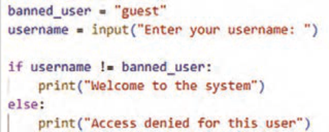
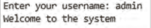
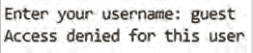
شکل 60
مثال: در این برنامه عملگر < برای بررسی شرط بیشتر بودن نمره هنرجو در دروس پودمانی از عدد 12 استفاده شده است. برنامه را اجرا و نتیجه را با دادههای مختلف بررسی کنید (شکل61).
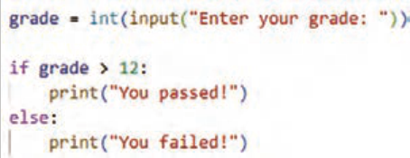
شکل 61
مثال: در این برنامه عملگر > برای بررسی محدودیت سنی زیر ۱۸ سال برای ورود به سایت استفاده شده است. برنامه را اجرا و نتیجه را با دادههای مختلف بررسی کنید (شکل62).
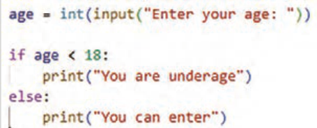
شکل 62
صفحه ۲۸
مثال: در این برنامه محدودیت تعداد سفارش کالا با عملگر => مورد بررسی قرار گرفته است که تنها به تعداد ۵ یا کمتر از ۵ را شامل میشود. برنامه را اجرا و نتیجه را با دادههای مختلف بررسی کنید (شکل63).
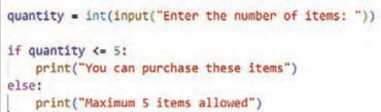
شکل 63
مثال: در این برنامه محدودیت پایه تحصیلی 11 برای ورود به سیستم پیشرفته با عملگر = < برقرار شده است.
برنامه را اجرا و نتیجه را با دادههای مختلف بررسی کنید (شکل64).
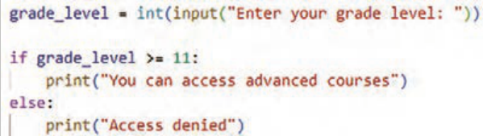
شکل 64
مثال: در این برنامه شرط ورود به مرحله دوم مسابقه سن حداقل ۱۸ و امتیاز حداقل 70 در نظر گرفته شده است. برنامه با عملگرهای مقایسه =< به معنی بزرگتر مساوی و عملگر منطقی and به معنی " و " نوشته شده است. نتیجه عملگر and زمانی True است که هر دو عبارت
و
هر دو
True باشند. برنامه را اجرا و نتیجه را با دادههای مختلف بررسی کنید (شکل65).
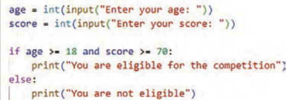
شکل 65
صفحه ۲۹
مثال: در این برنامه عملگر منطقی or بین دو عبارت قرار گرفته است و شرط را برای برقراری یکی از عبارات بررسی میکند. نتیجه آن زمانی true است که یکی از عبارات دو طرف or درست باشد. برنامه را اجرا و نتیجه را با دادههای مختلف بررسی کنید (شکل66).
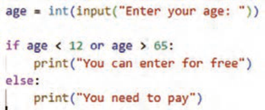
شکل 66
فعالیت
برنامهای بنویسید که سن و نام کشور کاربر را دریافت کند و درصورتیکه سن بزرگتر یا مساوی ۱۸ باشد و نام کشور ایران بود، پیغام "اجازه ثبتنام دارید" نمایش دهد.
نوع سوم ساختار شرطی if – elif– else :
این ساختار زمانی استفاده میشود که چند شرط مختلف وجود داشته باشد و برنامه باید یکی از آنها را انتخاب کند. elif شرط جدید را در صورت برقرار نبودن شرطهای قبلی بررسی میکند، یعنی اگر یکی از شرطهای if یا elifها برقرار شود و دستور آن اجرا شود دیگر شرط سایر elifها بررسی نخواهد شد. elif مخفف elseif است و برای بررسی شرطهای بعدی استفاده میشود. تفاوت بین else و elif این است که بعد از else هیچ شرطی نوشته نمیشود.
مثال: برنامهای بنویسید که سطح بازی را از ورودی دریافت و سپس بر اساس آن پیامی مناسب نمایش دهد.
برنامه را نوشته، اجرا و نتیجه را با دادههای مختلف بررسی کنید (شکل67).
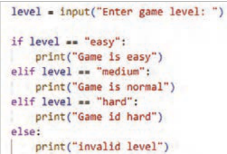
شکل 67
مثال: برنامهای بنویسید که پس از دریافت نوع غذا و نوشیدنی از کاربر در آن موارد زیر بررسی شود:
اگر پیتزا و نوشیدنی انتخاب شود ← قیمت 140000 اگر پیتزا بدون نوشیدنی← قیمت 120000 در غیر این صورت ← پیام«Otheroption» چاپ شود. در این مثال استفاده از عملگر منطقی and در شرط، مورداستفاده قرار گرفته است. برنامه را نوشته و اجرا کنید (شکل68).
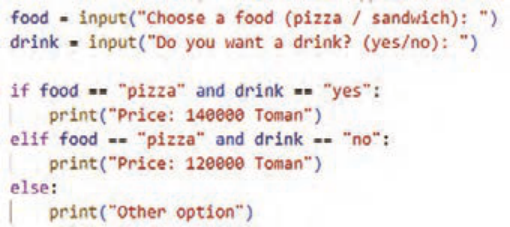
شکل 68
مثال: دستورات زیر وضعیت دستگاه را از کاربر دریافت میکند و بر اساس آن پیام مناسب را نمایش میدهد.
برنامه زیر را اجرا و نتیجه را بررسی کنید (شکل69).
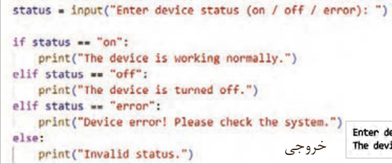
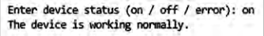
خروجی
شکل 69
صفحه ۳۱
مزیت استفاده از ساختار if-elif-else نسبت به استفاده از چند if مجزا این است که اگر شرطی برقرار باشد، دیگر شرطهای بعدی توسط برنامه بررسی نمیشوند. این ویژگی باعث افزایش سرعت اجرای برنامه و بهینهتر شدن عملکرد آن میشود.
فعالیت
فروشنده برای خریداران میوۀ سیب تخفیف گذاشته است. برنامهای بنویسید که نام میوه و تعداد خرید را از کاربر بگیرد: اگر میوه apple و تعداد حداقل ۵، پیام "Discountapplied" نمایش داده شود.
در غیر این صورت پیام "Nodiscount" نمایش داده شود.
فعالیت
برنامهای بنویسید که کاربر سن خود را وارد کند. برنامه باید موارد زیر را بررسی کند:
اگر سن کاربر بین ۱۸ تا ۲۵ سال باشد پیام "Welcome, youngadult" نمایش داده شود.
اگر سن کاربر بزرگتر یا برابر ۲۶ باشد پیام "Welcome, adult" نمایش داده شود.
اگر سن کاربر کمتر از ۱۸ باشد پیام "Youareunderage" نمایش داده شود.
فعالیت
برنامهای بنویسید که از دستور if , elif با دریافت وضعیت سفارش از فروشنده استفاده کند و بر اساس وضعیت سفارش (Delivered/Sent/Registered) در فروشگاه اینترنتی، نحوه ارسال کالا با پیامهایی مناسب اعلام شود:
Your order has been successfully delivered - Your order is on the way - Your order
.is being processed - Status unknown
فعالیت
برنامهای بنویسید که امتیاز دانشآموز را بهصورت یک عدد صحیح مابین ۱ تا ۱۰۰ دریافت کند.
اگر امتیاز ≥ ۹۰← پیام "exelent" اگر امتیاز بین ۶۹ تا ۹۰← پیام "good" اگر امتیاز بین ۵۰ تا ۶۹← پیام "pass" اگر امتیاز < ۵۰ ← پیام "fail" را نمایش دهد.
مثال: برنامهای بنویسید که اگر مقدار choice یکی از گزینههای زیر بود، پیام مناسب را چاپ کند و در غیر این صورت پیام Foodnotavailable نمایش داده شود (شکل70).
الف) منوی غذا شامل دو گزینه زیر است:
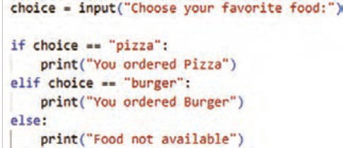
Pizza
burger
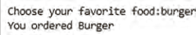
شکل70
صفحه ۳۲
ب) برنامه را گسترش دهید که اگر منوی غذا شامل سه گزینه زیر باشد: (شکل71)
pizza
burger
pasta
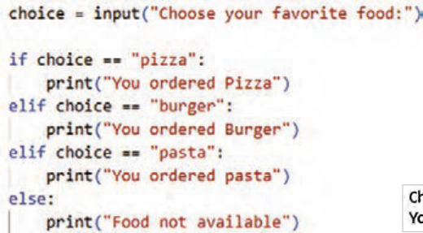
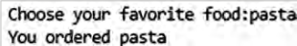
شکل 71
در مثال بالا اگر منو 20 غذا داشته باشد چه میشود؟ یا اگر فردا غذا جدید اضافه شود چه؟ اولین راهحلی که به نظر میرسد ایناست که از تعداد بیشتری if استفاده شود. ولی این کار، کد را طولانیتر و سختتر میکند. اما راه حل آن استفاده درست از لیستها و دستورات حلقههای تکرار است.
حلقههای تکرار (Loop):
در هنگام کدنویسی، اگر نیاز باشد یک دستور یا مجموعهای از دستورات چندین بار اجرا شود، از ساختارهای حلقههای تکرار استفاده میشود. این ساختارها باعث میشوند کدها خواناتر، کوتاهتر و خواناتر و مدیریت آن آسانتر شود.
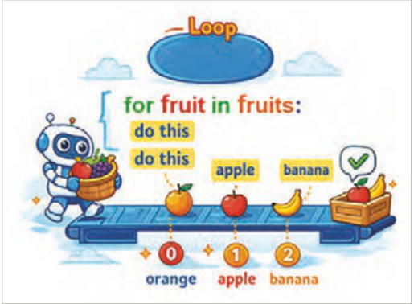
بهعنوانمثال، اگر لازم باشد برنامهای نوشته شود که کلمۀ python را ۱۰ بار چاپ کند، بهجای آنکه دستور ('python'(print ده بار به صورت جداگانه نوشته شود، میتوان این دستور را تنها یکبار داخل یک حلقه قرارداد تا اجرای آن بهصورت خودکار ده بار تکرار شود.
شکل 72
Page 27
Activity
Write a program so that a user is allowed to log in only if:
a username has been entered and (the password is correct or the verification code is active).
Example: Making sure a value is invalid: in this example the program is written with the comparison operator != meaning inequality, and if the entered username is not equal to "guest", the user is prevented from entering with an appropriate message. Run the program and check the result with different data (Figure 60).
Figure 60
Example: In this program the operator < is used to check the condition that the student's grade in modular courses is greater than the number 12. Run the program and check the result with different data (Figure 61).
Figure 61
Example: In this program the operator > is used to check the age limit under 18 for entering the site. Run the program and check the result with different data (Figure 62).
Figure 62
Page 28
Example: In this program the limit on the number of product orders is checked with the operator >=, which includes only a quantity of 5 or less than 5. Run the program and check the result with different data (Figure 63).
Figure 63
Example: In this program the grade-11 limit for entering the advanced system is set with the operator <=.
Run the program and check the result with different data (Figure 64).
Figure 64
Example: In this program the condition for entering the second stage of the contest is a minimum age of 18 and a minimum score of 70. The program is written with the comparison operators >= meaning greater than or equal and the logical operator and meaning "and". The result of the operator and is True when both expressions
and
both
are True. Run the program and check the result with different data (Figure 65).
Figure 65
Page 29
Example: In this program the logical operator or is placed between two expressions and checks the condition for one of the expressions to be true. Its result is true when one of the expressions on either side of or is true. Run the program and check the result with different data (Figure 66).
Figure 66
Activity
Write a program that receives the user's age and country name and, if the age is greater than or equal to 18 and the country name is Iran, displays the message "You are allowed to register".
Third type of the conditional structure if – elif– else:
This structure is used when there are several different conditions and the program must choose one of them. elif checks a new condition if the previous conditions were not met; that is, if one of the if or elif conditions is met and its statement is executed, the other elif conditions will not be checked. elif is short for elseif and is used to check later conditions. The difference between else and elif is that after else no condition is written.
Example: Write a program that receives the game level from input and then displays an appropriate message based on it.
Write the program, run it, and check the result with different data (Figure 67).
Figure 67
Example: Write a program that, after receiving the type of food and drink from the user, checks the following:
If pizza and a drink are selected → price 140000 If pizza without a drink → price 120000 otherwise → print the message «Otheroption». In this example the logical operator and is used in the condition. Write and run the program (Figure 68).
Figure 68
Example: The statements below receive the device status from the user and display an appropriate message based on it.
Run the program below and check the result (Figure 69).
Output
Figure 69
Page 31
The advantage of using the if-elif-else structure instead of several separate if statements is that if a condition is met, the later conditions are not checked by the program. This feature increases the program's execution speed and makes its performance more efficient.
Activity
The seller has put a discount on apple fruit for buyers. Write a program that gets the fruit name and the purchase quantity from the user: if the fruit is apple and the quantity is at least 5, display the message "Discountapplied".
Otherwise display the message "Nodiscount".
Activity
Write a program in which the user enters their age. The program must check the following:
If the user's age is between 18 and 25 years, display the message "Welcome, youngadult".
If the user's age is greater than or equal to 26, display the message "Welcome, adult".
If the user's age is less than 18, display the message "Youareunderage".
Activity
Write a program that uses the if , elif statements by receiving the order status from the seller and, based on the order status (Delivered/Sent/Registered) in an online store, announces how the product is shipped with appropriate messages:
Your order has been successfully delivered - Your order is on the way - Your order
.is being processed - Status unknown
Activity
Write a program that receives a student's score as an integer between 1 and 100.
If score ≥ 90 → message "exelent" If score between 69 and 90 → message "good" If score between 50 and 69 → message "pass" If score < 50 → display the message "fail".
Example: Write a program that if the value of choice is one of the options below, prints an appropriate message and otherwise displays the message Foodnotavailable (Figure 70).
a) The food menu includes the two options below:
Pizza
burger
Figure 70
Page 32
b) Extend the program so that if the food menu includes the three options below: (Figure 71)
pizza
burger
pasta
Figure 71
In the example above, what happens if the menu has 20 foods? Or if a new food is added tomorrow? The first solution that comes to mind is to use more if statements. But that makes the code longer and harder. The solution is to use lists correctly and repetition-loop statements.
Repetition loops (Loop):
When coding, if a statement or a set of statements needs to be executed several times, repetition-loop structures are used. These structures make the code more readable, shorter and more readable, and easier to manage.
For example, if you need to write a program that prints the word python 10 times, instead of writing the statement print('python') ten times separately, you can put this statement only once inside a loop so that its execution is automatically repeated ten times.